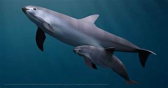
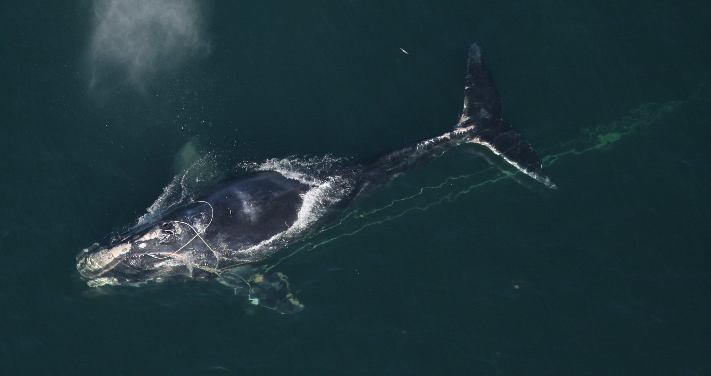
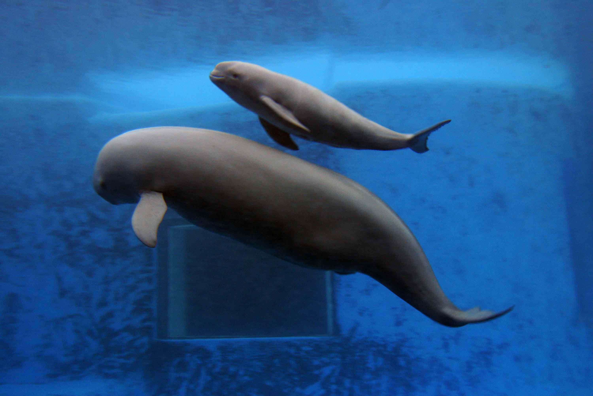
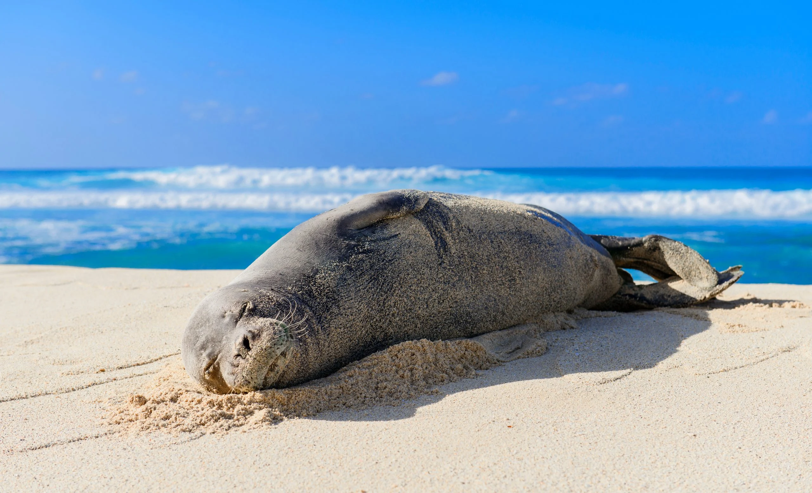
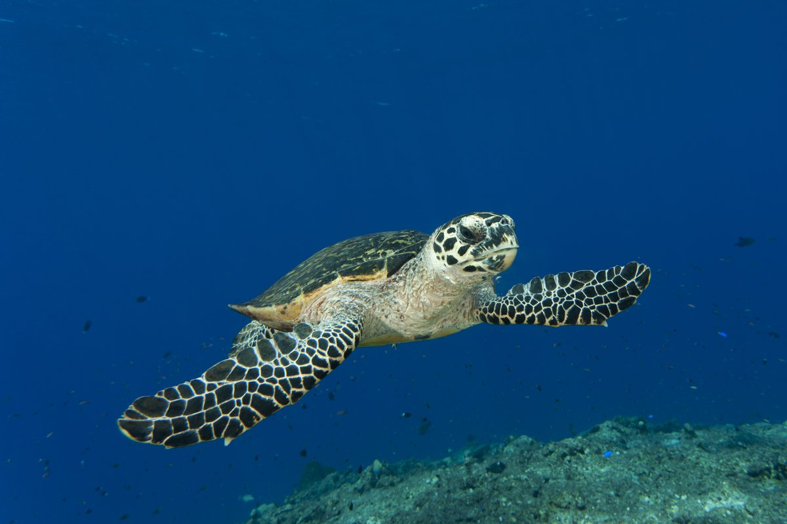

Most Endangered Species in the Ocean in 2024
According to the International Union for Conservation of Nature (IUCN) Red List of Threatened Species – the world’s most comprehensive inventory of the global conservation status of biological species – at least 37% of the world’s sharks and rays, 33% of reef corals, 26% of mammals (including marine) and 21% of reptiles are threatened with extinction. Many of these species live in oceans and marine environments, but overfishing, habitat loss and degradation, pollution, as well as climate change, have plagued many animals to the brink of extinction. These are just 11 examples of the most endangered species in the ocean that are in urgent need of protection.
Vaquita
- This timid and highly elusive dolphin is found exclusively on Mexico’s Gulf of California. Measuring in at just 1.5 metres, the vaquita is also the smallest of all cetacean species. Despite its relatively recent discovery in 1958, rampant and unregulated fishing practices, particularly the use of gill nets, in its limited habitats have pushed the animal to the brink of extinction with only a mere 10 individuals remaining in the wild. Bycatching alone, whereby large amounts of unwanted sea animals are captured during the fishing for a particular species, have led to a 94% population decline between 1997 and 2016. Despite increased awareness of its plight and attempted conservation efforts, Mexico has rolled back previous protective measures including a fishing-free vaquita refuge and increased fishing boat quotas in native vaquita habitats.

North Atlantic Right Whale

- By 2021, the North Atlantic right whale population was estimated to have plummeted down to fewer than 340 individuals, a sharp decline from the 480 individuals in 2011. The dramatically decreasing whale population is doubly harmed by ship strikes and entanglement in fishing gear. Initiatives such as the deployment of ‘ropeless’ fishing gear aim to reduce ongoing threats to the species, but in many parts of the world, limited or lack of fishing restrictions have slowed conservation efforts. In Maine, US for example, its lobster fishery – a major contributor of the state’s economy – has been locked in an adversarial relationship with conservationists over designated protected areas.
Yangtze Finless Porpoise
- The clue is in the name, this marine mammal is endemic to the Yangtze River in China – the longest river in Asia that generates as much as 20% of China’s GDP – and one of the few cetaceans that live in freshwater systems. The finless porpoise has been heavily impacted by local fisheries such as bycatching and entanglement. The waterways the porpoise live in are often packed with boat traffic, increasing the risk of collisions and injuries. Additionally, the river has suffered industrial and plastic pollution as well as agricultural runoff. As result, the porpoise population plunged to only 1,040 (from the latest figures in 2017).The annual decline rate of 13% means these animals are expected to become extinct within 10 years if there are no effective conservation actions in place.

Hawaiian Monk Seal

- Native to the Northwestern Hawaiian Islands, the Hawaiian Monk Seal is one of the two remaining in the monk seal species and one of the earless seals living in warm beaches (instead of typically colder climates). Historically, the monk seal has been heavily poached and hunted for its meat, oil and skin, devastating its population numbers. But the survival of the species is further threatened by plastic pollution and marine debris and entanglement in fishing nets in and around Hawaiian waters. According to recent research, its total population is estimated to be about 1,400.
Hawksbill Turtles and Kemp’s Ridley Turtles
- Of the seven species of sea turtle found all over the world, six of them are classified as either threatened or endangered. Hawksbill Turtles and Kemp’s Ridley Turtles, however, are considered critically endangered on the IUCN Red List, with the latter’s population estimated to be less than 10,000. Coastal development, marine pollution, overfishing and hunting are the biggest threats to these endangered species in the ocean. Over the past few decades, the sea turtles have been impacted by reduced amount of viable land where they can lay their eggs as well as targets from poachers for their eggs, shells, meat and skin. Climate change also poses specific challenges such as harsher storms, rising sea levels, shifting current, and hotter sands – sand temperature determines the sex of hatchlings .

Giant Manta Ray

- A 2020 IUCN report found that giant manta ray had undergone a population decline of between 50% and 79% within 87 years, which they attributed to be a direct result of unsustainable fishing practices. Giant manta rays are targeted and harvested for their gill plates, which they use to filter feed on small zooplankton from the water column, especially in the emerging market in Asia. Combined with the fact that manta rays give birth to just one offspring every few years in the wild, with the young often left unprotected, population recovery has been particularly slow and challenging. Though information on the global distribution of giant manta rays is lacking, regional population sizes are estimated to range from around 100 to 1,500 individuals.
Follow us for more updates Link